\(\textbf {Основные типы точек равновесия}\)
Пусть задана линейная однородная система второго порядка с постоянными коэффициентами: \[\left\{ \begin{array}{1} \frac{{dx}}{{dt}} = {a_{11}}x + {a_{12}}y\\ \frac{{dy}}{{dt}} = {a_{21}}x + {a_{22}}y \end{array} \right..\] Данная система уравнений является \(\textbf{автономной}\), поскольку правые части уравнений не содержат в явном виде независимой переменной \(t.\)
В матричной форме система уравнений записывается как
\[{\mathbf{X'} = A\mathbf{X},\;\;\text{где}\;\;\mathbf{X} = \left( {\begin{array}{*{20}{c}}
x\\
y
\end{array}} \right),}\;\;
{A = \left( {\begin{array}{*{20}{c}}
{{a_{11}}}&{{a_{12}}}\\
{{a_{21}}}&{{a_{22}}}
\end{array}} \right).}\]
Положения равновесия находятся из решения стационарного уравнения \[A\mathbf{X} = \mathbf{0}.\]
Это уравнение имеет единственное решение \(\mathbf{X} = \mathbf{0},\) если матрица \(A\) является \(\textbf{невырожденной}\),
т.е. при условии \(\det A \ne 0.\) В случае \(\textbf{вырожденной матрицы}\) система имеет бесконечное
множество точек равновесия.
Классификация положений равновесия определяется \(\textbf{собственными значениями}\) \({\lambda _1},{\lambda _2}\)
матрицы \(A.\) Числа \({\lambda _1},{\lambda _2}\) находятся из решения \(\textbf{характеристического уравнения}\)
\[{\lambda ^2} - \left( {{a_{11}} + {a_{22}}} \right)\lambda + {a_{11}}{a_{22}} - {a_{12}}{a_{21}} = 0.\]
В общем случае, когда матрица \(A\) является невырожденной, существует \(4\) различных типа точек равновесия:
Устойчивость положений равновесия определяется общими теоремами об устойчивости
Так, если действительные собственные значения (или действительные части комплексных собственных значений) отрицательны, то точка равновесия
является \(\textbf{асимптотически устойчивой}\). Примерами таких положений равновесия являются
\(\textbf{устойчивый узел}\) и \(\textbf{устойчивый фокус}\).
Если действительная часть хотя бы одного собственного числа положительна, то соответствующее положение равновесия является
\(\textbf{неустойчивым}\). Например, это может быть \(\textbf{седло}\).
Наконец, в случае чисто мнимых корней (точка равновесия является \(\textbf{центром}\)) мы имеем дело
с классической \(\textbf{устойчивостью в смысле Ляпунова}\).
Наша дальнейшая цель состоит в том, чтобы изучить поведение решений вблизи положений равновесия. Для систем \(2\)-го порядка это удобно
делать графически с помощью \(\textbf{фазового портрета}\), представляющего собой совокупность
\(\textbf{фазовых траекторий}\) на координатной плоскости. Стрелки на фазовых траекториях показывают
направление перемещения точки (т.е. некоторого конкретного состояния системы) с течением времени.
Рассмотрим подробнее каждый тип точки равновесия и соответствующие фазовые портреты.
Собственные значения \({{\lambda _1},{\lambda _2}}\) точек типа "узел" удовлетворяют условиям: \[{\lambda _1},{\lambda _2} \in R,\;\;{\lambda _1} \cdot {\lambda _2} > 0.\] Здесь могут возникнуть следующие частные случаи.
1) Корни \({{\lambda _1},{\lambda _2}}\) различны \(\left( {{\lambda _1} \ne {\lambda _2}} \right)\) и отрицательны \(\left( {{\lambda _1} < 0, {\lambda _2}} < 0\right).\)
Построим схематический фазовый портрет такой точки равновесия. Пусть для определенности \(\left| {{\lambda _1}} \right| < \left| {{\lambda _2}} \right|.\) Общее решение системы имеет вид \[\mathbf{X}\left( t \right) = {C_1}{e^{{\lambda _1}t}}{\mathbf{V}_1} + {C_2}{e^{{\lambda _2}t}}{\mathbf{V}_2},\] где \({\mathbf{V}_1} = {\left( {{V_{11}},{V_{21}}} \right)^T},\) \({\mathbf{V}_2} = {\left( {{V_{12}},{V_{22}}} \right)^T},\) − собственные векторы, соответствующие числам \({{\lambda _1},{\lambda _2}},\) а \({C_1},{C_2}\) − произвольные константы.
Поскольку оба собственных значения отрицательны, то решение \(\mathbf{X} = \mathbf{0}\) является \(\textbf{асимптотически устойчивым}\). Такое положение равновесия называется \(\textbf{устойчивым узлом}\). При \(t \to \infty\) фазовые кривые стремятся к началу координат \(\mathbf{X} = \mathbf{0}.\)
Уточним направление фазовых траекторий. Поскольку \[ {x\left( t \right) = {C_1}{V_{11}}{e^{{\lambda _1}t}} + {C_2}{V_{12}}{e^{{\lambda _2}t}},}\;\; {y\left( t \right) = {C_1}{V_{21}}{e^{{\lambda _1}t}} + {C_2}{V_{22}}{e^{{\lambda _2}t}},} \] то производная \(\large\frac{{dy}}{{dx}}\normalsize\) равна \[\frac{{dy}}{{dx}} = \frac{{{C_1}{V_{21}}{\lambda _1}{e^{{\lambda _1}t}} + {C_2}{V_{22}}{\lambda _2}{e^{{\lambda _2}t}}}}{{{C_1}{V_{11}}{\lambda _1}{e^{{\lambda _1}t}} + {C_2}{V_{12}}{\lambda _2}{e^{{\lambda _2}t}}}}.\] Разделим числитель и знаменатель на \({{e^{{\lambda _1}t}}}:\) \[\frac{{dy}}{{dx}} = \frac{{{C_1}{V_{21}}{\lambda _1} + {C_2}{V_{22}}{\lambda _2}{e^{\left( {{\lambda _2} - {\lambda _1}} \right)t}}}}{{{C_1}{V_{11}}{\lambda _1} + {C_2}{V_{12}}{\lambda _2}{e^{\left( {{\lambda _2} - {\lambda _1}} \right)t}}}}.\] В данном случае \({\lambda _2} - {\lambda _1} < 0.\) Поэтому члены с экспоненциальной функцией в пределе при \(t \to \infty\) стремятся к нулю. В результате при \({C_1} \ne 0\) получаем: \[\lim\limits_{t \to \infty } \frac{{dy}}{{dx}} = \frac{{{V_{21}}}}{{{V_{11}}}}.\] т.е. при \(t \to \infty\) фазовые траектории становятся параллельными собственному вектору \({\mathbf{V}_1}.\)
В случае \({C_1} = 0\) производная при любом \(t\) равна \[\frac{{dy}}{{dx}} = \frac{{{V_{22}}}}{{{V_{12}}}},\] т.е. фазовая траектория лежит на прямой, направленной вдоль собственного вектора \({\mathbf{V}_2}.\)
Теперь рассмотрим поведение фазовых траекторий при \(t \to -\infty.\) Очевидно, что координаты \(x\left( t \right),y\left( t \right)\) стремятся к бесконечности, а производная \(\large\frac{{dy}}{{dx}}\normalsize\) при \({C_2} \ne 0\) принимает следующий вид: \[\frac{{dy}}{{dx}} = \frac{{{C_1}{V_{21}}{\lambda _1}{e^{\left( {{\lambda _1} - {\lambda _2}} \right)t}} + {C_2}{V_{22}}{\lambda _2}}}{{{C_1}{V_{11}}{\lambda _1}{e^{\left( {{\lambda _1} - {\lambda _2}} \right)t}} + {C_2}{V_{12}}{\lambda _2}}} = \frac{{{V_{22}}}}{{{V_{12}}}},\] т.е. фазовые кривые в бесконечно удаленных точках становятся параллельными вектору \({\mathbf{V}_2}.\)
Соответственно, при \({C_2} = 0\) производная равна \[\frac{{dy}}{{dx}} = \frac{{{V_{21}}}}{{{V_{11}}}}.\] В этом случае фазовая траектория определяется направлением собственного вектора \({\mathbf{V}_1}.\)
С учетом рассмотренных свойств фазовых траекторий, фазовый портрет \(\textbf{устойчивого узла}\) имеет следующий вид.
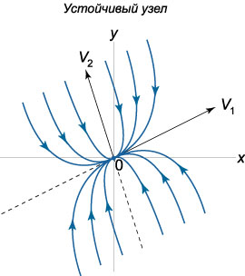
2) Корни \({{\lambda _1},{\lambda _2}}\) различны \(\left( {{\lambda _1} \ne {\lambda _2}} \right)\)
и положительны \(\left( {{\lambda _1} > 0, {\lambda _2}} > 0\right).\)
В этом случае точка \(\mathbf{X} = \mathbf{0}\) называется \(\textbf{неустойчивым узлом}\). Ее фазовый портрет имеет вид
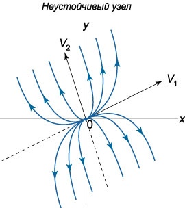
Заметим, что в случае как устойчивого, так и неустойчивого узла фазовые траектории касаются прямой, которая направлена вдоль собственного вектора, соответствующего меньшему по абсолютной величине собственному значению \(\lambda.\)
Пусть характеристическое уравнение имеет один нулевой корень кратности \(2,\) т.е. рассмотрим случай \({\lambda _1} = {\lambda _2} = {\lambda} \ne 0.\) При этом система имеет базис из двух собственных векторов, т.е. геометрическая кратность собственного значения \(\lambda\) равна \(2.\) В терминах линейной алгебры это означает, что размерность собственного подпространства матрицы \(A\) равна \(2:\) \(\dim \ker A = 2.\) Такая ситуация реализуется в системах вида \[ {\frac{{dx}}{{dt}} = \lambda x,}\;\; {\frac{{dy}}{{dt}} = \lambda y.} \] Направление фазовых траекторий зависит от знака \(\lambda.\) Здесь возможны следующие два случая:
1) \({\lambda _1} = {\lambda _2} = {\lambda} < 0.\) Такое положение равновесия называется \(\textbf{устойчивым дикритическим узлом}\).
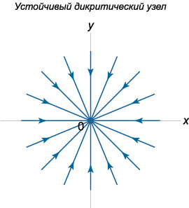
2) \({\lambda _1} = {\lambda _2} = {\lambda} > 0.\) Данная комбинация собственных значений соответствует \(\textbf{неустойчивому дикритическому узлу}\).
Пусть собственные значения матрицы \(A\) снова являются совпадающими: \({\lambda _1} = {\lambda _2} = {\lambda} \ne 0.\) В отличие от предыдущего случая дикритического узла предположим, что геометрическая кратность собственного значения (или другими словами размерность собственного подпространства) равна теперь \(1.\) Это означает, что матрица \(A\) имеет лишь один собственный вектор \({\mathbf{V}_1}.\) Второй линейно независимый вектор, необходимый для составления базиса, определяется как вектор \({\mathbf{W}_1},\) присоединенный к \({\mathbf{V}_1}.\)
1) В случае \({\lambda _1} = {\lambda _2} = {\lambda} < 0\) точка равновесия называется \(\textbf{устойчивым вырожденным узлом}\).
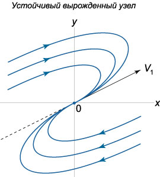
2) При \({\lambda _1} = {\lambda _2} = {\lambda} > 0\) положение равновесия называется \(\textbf{неустойчивым вырожденным узлом}\).
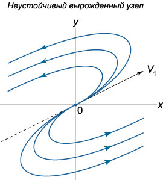
Положение равновесия является \(\textbf{седлом}\) при условиях \[{\lambda _1},{\lambda _2} \in R,\;\;{\lambda _1} \cdot {\lambda _2} < 0.\] Поскольку одно из собственных значений положительно, то седло является неустойчивой точкой равновесия. Пусть, например, \({\lambda _1} < 0,{\lambda _2} > 0.\) Собственные значения \({\lambda _1}\) и \({\lambda _2}\) ассоциируются с соответствующими собственными векторами \({\mathbf{V}_1}\) и \({\mathbf{V}_2}.\) Прямые, направленные вдоль собственных векторов \({\mathbf{V}_1},\) \({\mathbf{V}_2},\) называются \(\textbf{сепаратрисами}\). Они являются асимптотами для остальных фазовых траекторий, имеющих форму гипербол. Каждой из сепаратрис можно сопоставить определенное направление движения. Если сепаратриса связана с отрицательным собственным значением \({\lambda _1} < 0,\) т.е. в данном случае направлена вдоль вектора \({\mathbf{V}_1},\) то движение вдоль нее происходит к точке равновесия \(\mathbf{X} = \mathbf{0}.\) И наоборот, при \({\lambda _2} > 0,\) т.е. для сепаратрисы, связанной с вектором \({\mathbf{V}_2},\) движение направлено от начала координат. Схематически фазовый портрет седла показан на рисунке.
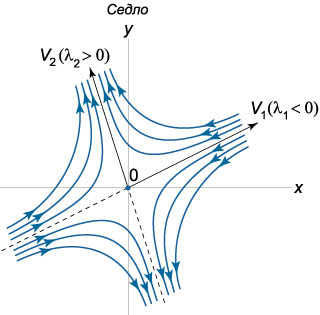
Пусть теперь собственные значения \({\lambda _1},{\lambda _2}\) являются \(\textbf{комплексными числами}\), действительные части которых не равны нулю. Если матрица \(A\) состоит из действительных чисел, то комплексные корни будут представляться в виде \(\textbf{комплексно-сопряженных}\) чисел: \[{\lambda _{1,2}} = \alpha \pm i\beta .\] Выясним, какой вид имеют фазовые траектории в окрестности начала координат. Построим комплексное решение \({\mathbf{X}_1}\left( t \right)\) соответствующее собственному числу \({\lambda _1} = \alpha + i\beta :\) \[ {{\mathbf{X}_1}\left( t \right) = {e^{{\lambda _1}t}}{\mathbf{V}_1} } = {{e^{\left( {\alpha + i\beta } \right)t}}\left( {\mathbf{U} + i\mathbf{W}} \right),} \] где \({\mathbf{V}_1} = \mathbf{U} + i\mathbf{W}\) - комплекснозначный собственный вектор, ассоциированный с числом \({\lambda _1},\) \(\mathbf{U}\) и \(\mathbf{W}\) - действительные векторные функции. В результате преобразований получаем \[ {{\mathbf{X}_1}\left( t \right) = {e^{\alpha t}}{e^{i\beta t}}\left( {\mathbf{U} + i\mathbf{W}} \right) } = {{e^{\alpha t}}\left( {\cos \beta t + i\sin \beta t} \right)\left( {\mathbf{U} + i\mathbf{W}} \right) } = {{e^{\alpha t}}\left( {\mathbf{U}\cos \beta t + i\mathbf{U}\sin \beta t + i\mathbf{W}\cos \beta t - \mathbf{W}\sin \beta t} \right) } = {{e^{\alpha t}}\left( {\mathbf{U}\cos \beta t + - \mathbf{W}\sin \beta t} \right) } + {i{e^{\alpha t}}\left( {\mathbf{U}\sin \beta t + \mathbf{W}\cos \beta t} \right).} \] Действительная и мнимая части в последнем выражении образуют общее решение системы, которое имеет вид: \[ {\mathbf{X}\left( t \right) = {C_1}\text{Re}\left[ {{\mathbf{X}_1}\left( t \right)} \right] + {C_2}\text{Im}\left[ {{\mathbf{X}_1}\left( t \right)} \right] } = {{e^{\alpha t}}\left[ {{C_1}\left( {\mathbf{U}\cos \beta t - \mathbf{W}\sin \beta t} \right)} \right. } + {\left. {{C_2}\left( {\mathbf{U}\sin \beta t + \mathbf{W}\cos \beta t} \right)} \right] } = {{e^{\alpha t}}\left[ {\mathbf{U}\left( {{C_1}\cos \beta t + {C_2}\sin \beta t} \right)} \right. } + {\left. {\mathbf{W}\left( {{C_2}\cos \beta t - {C_1}\sin \beta t} \right)} \right].} \] Представим постоянные \({C_1},{C_2}\) в виде \[{C_1} = C\sin \delta ,\;\;{C_2} = C\cos \delta ,\] где \(\delta\) - некоторый вспомогательный угол. Тогда решение записывается как \[ {\mathbf{X}\left( t \right) = C{e^{\alpha t}}\left[ {\mathbf{U}\left( {\sin \delta \cos \beta t + \cos \delta \sin \beta t} \right)} \right. } + {\left. {\mathbf{W}\left( {\cos\delta \cos \beta t - \sin \delta \sin \beta t} \right)} \right] } = {C{e^{\alpha t}}\left[ {\mathbf{U}\sin \left( {\beta t + \delta } \right)} \right. + \left. {\mathbf{W}\cos \left( {\beta t + \delta } \right)} \right].} \] Таким образом, решение \(\mathbf{X}\left( t \right)\) раскладывается по базису, заданному векторами \(\mathbf{U}\) и \(\mathbf{W}:\) \[\mathbf{X}\left( t \right) = \mu \left( t \right)\mathbf{U} + \eta \left( t \right)\mathbf{W},\] где коэффициенты разложения \(\mu \left( t \right),\) \(\eta \left( t \right)\) определяются формулами: \[ {\mu \left( t \right) = C{e^{\alpha t}}\sin \left( {\beta t + \delta } \right),}\;\; {\eta \left( t \right) = C{e^{\alpha t}}\cos\left( {\beta t + \delta } \right).} \] Отсюда видно, что фазовые траектории представляют собой спирали. При \(\alpha < 0\) спирали будут закручиваться, приближаясь к началу координат. Такое положение равновесия называется \(\textbf{устойчивым фокусом}\). Соответственно, при \(\alpha > 0\) мы имеем \(\textbf{неустойчивый фокус}\).
Направление закручивания спиралей можно определить по знаку коэффициента \({a_{21}}\) в исходной матрице \(A.\) Действительно, рассмотрим производную \(\large\frac{{dy}}{{dt}}\normalsize,\) например, в точке \(\left( {1,0} \right):\) \[\frac{{dy}}{{dt}}\left( {1,0} \right) = {a_{21}} \cdot 1 + {a_{22}} \cdot 0 = {a_{21}}.\] Положительный коэффициент \({a_{21}} > 0\) соответствует закручиванию спиралей против часовой стрелки. При \({a_{21}} < 0\) спирали будут закручиваться по часовой стрелке.
Таким образом, с учетом направления закручивания спиралей, всего существует \(4\) различных вида фокуса. Схематически они показаны на рисунках.
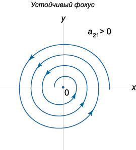
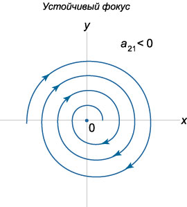
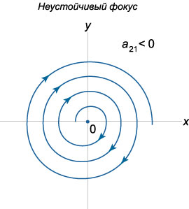
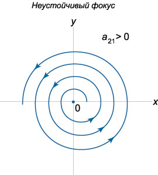
Если собственные значения матрицы \(A\) являются число мнимыми числами, то такое положение равновесия называется \(\textbf{центром}\). Для матрицы с действительными элементами мнимые собственные значения будут комплексно-сопряженными. В случае центра фазовые траектории формально получаются из уравнения спиралей при \(\alpha = 0\) и представляют собой \(\textbf{эллипсы}\), т.е. описывают периодическое движение точки на фазовой плоскости. Положения равновесия типа "центр" являются устойчивыми по Ляпунову.
Возможны два вида центра, различающиеся направлением движения точек. Как и в случае спиралей, направление движения можно определить, например, по знаку производной \(\large\frac{{dy}}{{dt}}\normalsize\) в какой-либо точке. Если взять точку \(\left( {1,0} \right),\) то \[\frac{{dy}}{{dt}}\left( {1,0} \right) = {a_{21}}.\] т.е. направление вращения определяется знаком коэффициента \({a_{21}}.\)
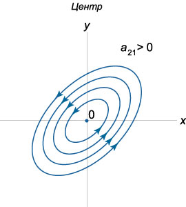
Итак, мы рассмотрели различные типы точек равновесия в случае \(\textbf{невырожденной матрицы}\) \(A\) \(\left( {\det A \ne 0} \right).\) С учетом направления фазовых траекторий всего существует \(13\) различных фазовых портретов. Теперь обратимся к случаю \(\textbf{вырожденной матрицы}\) \(A.\)
Если матрица является вырожденной, то у нее одно или оба собственных значения равны нулю. При этом возможны следующие частные случаи:
1) Случай \({\lambda _1} \ne 0, {\lambda _2} = 0\).
Здесь общее решение записывается в виде \[\mathbf{X}\left( t \right) = {C_1}{e^{{\lambda _1}t}}{\mathbf{V}_1} + {C_2}{\mathbf{V}_2},\] где \({\mathbf{V}_1} = {\left( {{V_{11}},{V_{21}}} \right)^T},\) \({\mathbf{V}_2} = {\left( {{V_{12}},{V_{22}}} \right)^T},\) - собственные векторы, соответствующие числам \({\lambda _1}\) и \({\lambda _2}.\) Оказывается, что в данном случае вся прямая, проходящая через начало координат и направленная вдоль вектора \({\mathbf{V}_2},\) состоит из точек равновесия (эти точки не имеют специального названия). Фазовые траектории представляют собой лучи, параллельные другому собственному вектору \({\mathbf{V}_1}.\) В зависимости от знака \({\lambda _1}\) движение при \(t \to \infty\) происходит либо в направлении прямой \({\mathbf{V}_2}\) (рис.\(14\)), либо от нее.
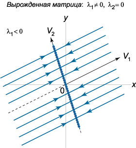
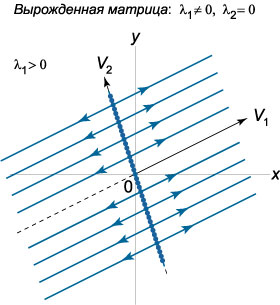
2) Случай \({\lambda _1} = {\lambda _2} = 0, \dim \ker A = 2.\)
В этом случае размерность собственного подпространства матрицы равна \(2\) и, следовательно, существуют два собственных вектора \({\mathbf{V}_1}\) и \({\mathbf{V}_2}.\) Такая ситуация возможна при \(\textbf{нулевой матрице}\) \(A.\) Общее решение выражается формулой \[\mathbf{X}\left( t \right) = {C_1}{\mathbf{V}_1} + {C_2}{\mathbf{V}_2}.\] Отсюда следует, что любая точка плоскости является положением равновесия системы.
3) Случай \({\lambda _1} = {\lambda _2} = 0, \dim \ker A = 1.\)
Данный случай вырожденной матрицы отличается от предыдущего тем, что существует лишь \(1\) собственный вектор (Матрица \(A\) при этом будет \(\textbf{ненулевой}\)). Для построения базиса в качестве второго линейно независимого вектора можно взять вектор \({\mathbf{W}_1},\) присоединенный к \({\mathbf{V}_1}.\) Общее решение системы записывается в виде \[\mathbf{X}\left( t \right) = \left( {{C_1} + {C_2}t} \right){\mathbf{V}_1} + {C_2}{\mathbf{W}_1}.\] Здесь все точки прямой, проходящей через начало координат и направленной вдоль собственного вектора \({\mathbf{V}_1},\) являются неустойчивыми положениями равновесия. Фазовые траектории представляют собой прямые, параллельные \({\mathbf{V}_1}.\) Направление движения вдоль этих прямых при \(t \to \infty\) зависит от постоянной \({C_2}:\) при \({C_2} < 0\) движение происходит слева направо, а при \({C_2} > 0\) - в противоположную сторону.
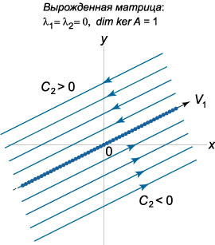
Как видно, в случае вырожденной матрицы существует \(4\) различных фазовых портрета, Таким образом, линейная автономная система второго порядка допускает всего \(17\) различных фазовых портретов.
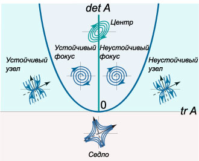